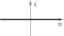
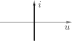
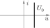
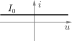
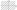

Component
Types of Components#
| Type | Symbol | Function | Linearized |
|---|---|---|---|
| Resistivity | \(f_R(u,i)\) | \(u = U_0 + R \cdot i\) | |
| Capacity | \(f_C(u,q)\) | \(q = Q_0 + C \cdot u\) | |
| Inductivity | \(f_L(i,\Phi)\) | \(\Phi = \Phi_0 + L \cdot i\) | |
| Memristivity | \(f_M(q,\Phi)\) | \(\Phi = \Phi_0 + M \cdot q\) |
Two Terminals#
| Component | Function | Chart |
|---|---|---|
| Open Circuit | \(u \in \R\) \(i = 0\) |  |
| Short Circuit | \(u = 0\) \(i \in \R\) |  |
| Voltage Source | \(u = U_0\) \(i \in \R\) |  |
| Current Source | \(u \in \R\) \(i = I_0\) |  |
| Nullator | \(u = 0\) \(i = 0\) |
|
| Norrator | \(u \in \R\) \(i \in \R\) |
 |
| Resistor | \(u = R \cdot i\) \(i = \frac{1}{R} \cdot u\) | |
| Capacitor | \(I = C \cdot\dot U\) \(C = \frac{\diff Q}{\diff U}\) |
|
| Inductor | \(U = L \cdot\dot I\) \(L = \frac{\diff \Phi}{\diff U}\) |
|
| ideal Diode | \(\begin{array}{ll} u = 0 \text{ if } i > 0 \\ i = 0 \text{ if } u < 0\end{array}\) | |
| reale Diode | \(\begin{array}{ll} u_D = u_T \cdot \ln \left(\frac{i_D}{I_S} + 1 \right) \\ i_D = I_S \cdot \left( \exp \left(\frac{u_D}{U_T}\right) -1 \right) \end{array}\) | |
| LED | \(i = I_S \cdot \left( \exp \left(\frac{u_D}{U_T}\right) -1 \right) - i_L\) |